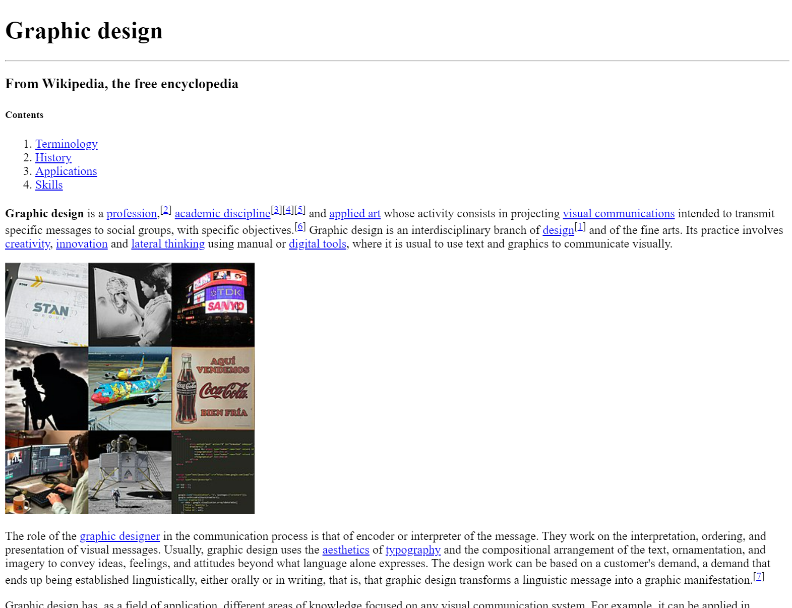

*Note: It is imperative that all of your coursework throughout your time here at F.I.R.S.T. be saved on an external hard/flash drive from now through graduation. You will be referencing your work again in the future to be added to your portfolio, so we expect you not to delete any of your work, including working files.*

OBJECTIVES:
-
- Create a simplified version of the Graphic Design Wikipedia page, similar to Wiki Page 1, but with more content
- Include content up THROUGH the end of the Skills section
- Practice using the HTML Elements and Attributes you've learned so far
NEW CONCEPTS WE'LL BE USING:
-
- Anchor elements (<a>)
- HTML Attributes (href attribute for <a> elements, id attributes for anything we want to anchor to)
HOW TO COMPLETE:
Once again, we're going to take advantage of Wiki pages' relatively simple structure, to practice what we've learned recently in HTML. Our goal is to recreate a SIMPLIFIED version of the Graphic Design Wikipedia page up THROUGH the Skills section, including the new HTML content we've learned about.
We're still not worrying too much about appearance; we won't be able to change much aside from the text styling until we learn about CSS, so we're primarily focusing on creating HTML elements properly and getting content on the page. Let's get started!
-
- Navigate to the "Graphic design" Wikipedia page in the Chrome browser
- In Visual Studio Code, duplicate your code-skeleton project folder inside of your repository folder, and rename the duplicate "wiki-page-2"
- This time, you're responsible for writing up the elements, tags, and attributes you need yourself; however, you'll still be copy/pasting the content found on the Wikipedia page.
- The main new requirement compared to Wiki Page 1 is including anchor elements
- the anchors in the "Contents" section should be functional, meaning you can click on them and they'll take you to another section on the page.
- There are many more anchors on the actual page, but they are optional for this assignment; the only required anchors are the ones in the "Contents" section
- By the time you complete the page, you should have used many of the same elements as before, but also some new ones:
- Heading elements (like <h1>, <h3>, etc.)
- Paragraph elements (<p>)
- List elements (<ul> or <ol>)
- List Item elements (<li>)
- Horizontal Rule elements (<hr>)
- Image elements (<img>)
- including src, alt, and probably width and/or height attributes
- there are a lot more images this time; you can choose where in the content they should go
- Text styling elements (<b> and <i> and <sup>)
- Anchor elements (<a>)
- including href attributes, and the id attribute on elements you want to anchor to
- again, the only REQUIRED anchor elements for this assignment are the ones in the "Contents" section
- remember that href="#" will create a "dummy" hyperlink that doesn't go anywhere
- whereas an href with a value after a # (e.g. href="#my-id") will connect it to the element with that id on the page
When completed, your preview window in Visual Studio Code should resemble the screenshot at the top of the assignment (though it could look different if your window width is wider or smaller).
CHALLENGE
Dummy Links
As mentioned earlier in the assignment, there are a LOT of anchors on the original page that are not required for your assignment...but that doesn't mean that you can't implement them if you have the time! Add as many of the anchors from the original page as you can, using "dummy" links (i.e. anchor elements with href="#")
Go further!
If you find yourself finishing early and are wondering what to do, notice that we didn't add all the sections from the Wikipedia page.
Venture forth into the unknown, and try your best to add the remaining section content on Graphic Design!
HOW TO SUBMIT:

-
- SAVE ALL OF YOUR WORK BEFORE PROCEEDING (inside Visual Studio Code)
- Open your Github Desktop app and commit and push any changes you made in the project folder
- Go to github.com in the Google Chrome browser and ensure the changes to your project folder were "pushed" up to your github.com repository
- Open the Github Pages site (Settings -> Pages -> Visit site)
- or alternatively, go to the Environments/Deployments section of your repository page, click "github-pages", and then click the most recent deployment
- Add your project folder name at the end of your URL
- Open the link to your new webpage for the project.
- Confirm it actually works before you submit it!!!
- Copy the URL in the address bar and submit it to receive credit for this assignment.
- Example URL: http://username.github.io/code-skeleton/
- This example assumes you followed the initial setup instructions correctly; if you deviated or made any mistakes, your URL may look a little different